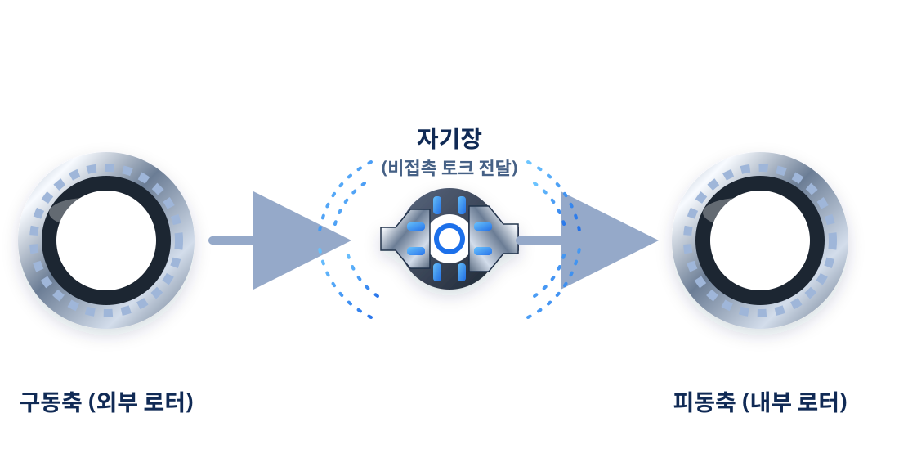

기술소개
비접촉 토크 전달 기반 N:1 비접촉 마그네틱(전기) 감속기의 특징, 작동 원리, 적용 분야를 소개합니다.
N:1
N:1 비접촉 마그네틱(전기) 감속기
내·외부 로터 사이의 자속을 이용해 토크를 전달하는 비접촉 감속기입니다. 기계식 맞물림이 없어 마모·소음·윤활 부담을 줄이고, 정밀 구동과 청정 환경이 중요한 장비에 적용 가능성을 검토할 수 있습니다.
- 비접촉 토크 전달
- 높은 효율과 신뢰성
- 소음·진동 저감
- 정밀 운전 및 제어 가능
- 청정 환경 적용 가능
기술 특징
비접촉 토크 전달 구조를 통해 소음, 마모, 유지보수, 윤활 관리 부담을 줄이고 정밀 구동 환경에 대응합니다.
비접촉 토크 전달
기계적 맞물림 없이 자력으로 동력을 전달해, 과부하나 충돌 시 2차 파손 위험을 줄이는 데 도움이 됩니다.
소음·진동 저감
접촉에 따른 충격과 반복 마찰이 적어, 운전 소음과 진동을 낮추는 데 유리합니다.
유지보수 부담 감소
치면 마모와 윤활 관리 부담을 줄여, 정기 점검 중심의 단순한 유지관리 체계 구축에 도움이 됩니다.
청정 환경 대응
윤활유 사용을 최소화하는 방향의 설계가 가능해, 오염 관리가 중요한 청정 공정에 적합합니다.
정밀 제어
안정적인 감속비와 토크 전달 특성으로, 정밀 위치 제어가 필요한 장비에 적용 검토가 가능합니다.
작동 원리
외부 로터와 내부 로터에 배치된 영구자석이 자기장을 형성하고, 이 자기장이 비접촉 상태에서 토크를 전달합니다. 기계적 치합이 없어 마모와 윤활 부담을 줄이면서도 안정적인 구동을 구현할 수 있습니다.

적용 분야
반도체/디스플레이
클린룸 장비 · 웨이퍼 이송 · 정밀 스테이지
클린룸 장비 · 웨이퍼 이송 · 정밀 스테이지
의료/바이오
분석 장비 · 의료 로봇 · 무균 환경 장비
분석 장비 · 의료 로봇 · 무균 환경 장비
로봇/정밀구동
협동로봇 · 정밀 액추에이터 · 인덱스 구동
협동로봇 · 정밀 액추에이터 · 인덱스 구동
청정/무윤활 환경
진공 · 클린룸 · 식품 장비 · 윤활 제한 환경
진공 · 클린룸 · 식품 장비 · 윤활 제한 환경
에너지/특수장비
정밀 구동 시험 장비 · 특수 산업 장비
정밀 구동 시험 장비 · 특수 산업 장비
기술 도입 및 협력을 원하시나요?
아이엠에르텍의 전문 엔지니어가 적용 가능성을 함께 검토합니다.